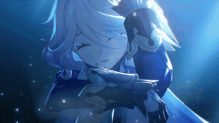

บางคืน
เราก็แค่ต้องการ
เพลงสักเพลง
พื้นที่เล็ก ๆ สำหรับค้นพบเสียงเพลงที่อยู่ข้างคุณ ในคืนที่เมืองเงียบลง และความรู้สึกค่อย ๆ ชัดเจนขึ้น

THE LISTENING ROOM / 01
เพลงที่อยากชวนให้รู้จัก
สามบรรยากาศสำหรับคืนที่คุณอยากฟังอะไรสักอย่าง
ARCHIVE & MOODS / 02
คลังเพลงของ Ena
เลือกฟังตามช่วงเวลา ความรู้สึก หรือเสียงบรรยากาศที่คุณกำลังตามหา
ยังไม่พบเพลงที่ตรงกับความรู้สึกนี้ในห้อง
ABOUT THE ROOM / 03
พื้นที่เล็ก ๆ ระหว่าง
ความเงียบกับเสียงเพลง
Ena (เอนะ) เกิดจากความตั้งใจอยากสร้างมุมพักสายตาและพักใจในโลกอินเทอร์เน็ตที่เต็มไปด้วยเสียงดังและความเร่งรีบ เราเชื่อว่าเพลงบางเพลงไม่ได้ถูกสร้างมาเพื่อติดชาร์ต แต่ถูกสร้างมาเพื่อเป็นเพื่อนเงียบ ๆ ในคืนที่เรานั่งมองหน้าต่างหรือเดินกลับบ้านคนเดียว
คัดสรรด้วยความรู้สึก
ไม่มีอัลกอริทึมที่เร่งเร้า มีเพียงบันทึกสั้น ๆ และเพลงแนว Japanese Indie, Ambient, Dream Pop และ Acoustic ที่เราหยิบมาวางไว้บนโต๊ะไม้ทีละแผ่น
สีน้ำเงินของยามค่ำคืน
เราเลือกใช้เฉดสี Midnight Blue และ Ocean Blue เพื่อจำลองช่วงเวลา Blue Hour — รอยต่อระหว่างแสงสุดท้ายของวันกับความสงบของท้องฟ้ายามค่ำ
ทดลองฟังเสียงบรรยากาศในห้อง
ทุกเพลงใน Ena มาพร้อมเครื่องเล่นเสียงบรรยากาศจำลอง (Ambient Synth & Rain/Waves Generator) ที่สร้างเสียงคอร์ดเปียโนอุ่น ๆ ผสานเสียงธรรมชาติเบา ๆ เพื่อให้คุณเปิดคลอระหว่างอ่านหนังสือหรือพักผ่อนได้จริง